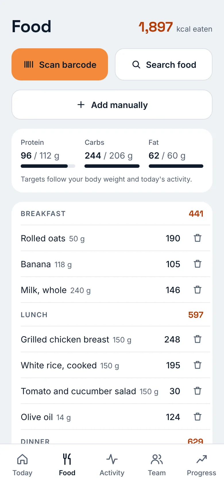

One clear number
What you ate, minus a share of what you burned, shown against a healthy range for you. Burn is always labelled as an estimate.
One number a day: what you ate, against how much you moved. Track it on your own, or with a private team of up to five friends.
Free. No account. No ads. Android 7.0 or newer.
Built for people who want to stay on track without handing over their data or paying to unlock the basics.
What you ate, minus a share of what you burned, shown against a healthy range for you. Burn is always labelled as an estimate.
Scan a barcode or search by name in English or Arabic. Over 40 common foods are built in, including Egyptian and Arabic staples like koshari and ful.
Record runs, walks and rides with GPS, or log any other workout by hand. Hard minutes count double, like the WHO guideline.
A 7-day weight average smooths out the daily noise, so one heavy morning does not ruin your week.
Create a private team of up to five. Share a weekly goal in active minutes, keep a streak together and swap ideas.

Tracking should help, not shame. Balance has guardrails that many apps skip.
No account. No ads. No analytics. Your food, activity and weight logs live on your phone, with a one-tap backup file you control. Only the optional team feature uses a server, and it stores encrypted data only. Read the full privacy policy.
Balance is in early access and is not on Google Play yet, so you install it directly from this page.
Tap the button below on your Android phone to download the app file (about 5 MB).
Open the file. If Android asks, allow installs from your browser for this one time.
Open Balance and enter your age, height and weight. Everything stays on your phone.
On a computer?Scan this code with your phone to download Balance.
Yes. There are no ads and nothing is locked today. If optional extras are added later, what is free now will stay free.
Your food, activity and weight logs stay on your phone. If you use a team, only encrypted team data is stored on a Firebase server, and only your team's members hold the key.
No. There is no sign-up, email or password.
Logging food and activity works offline. Team sync, barcode lookups and online food search need an internet connection.
Not yet. Balance is Android-only for now.
No. Balance gives general information and estimates. If you have a health condition or are unsure what is right for you, talk to a doctor or a registered dietitian.